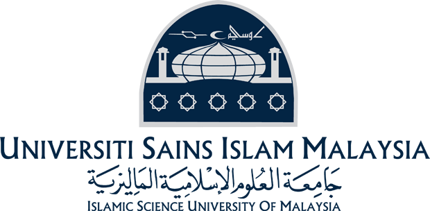

PENGENALAN UNIVERSITI SAINS ISLAM MALAYSIA (USIM)
Universiti Sains Islam Malaysia (USIM) merupakan Universiti Islam Malaysia yang pertama ditubuhkan oleh Kerajaan Malaysia dan merupakan Institusi Pengajian Tinggi Awam (IPTA) yang ke-12.
USIM ditubuhkan untuk memartabatkan pendidikan Islam serta membawanya ke dalam arus perdana pendidikan negara dan menekankan penggunaan ICT dalam sistem pengajaran dan penyelidikannya. USIM juga menumpukan penguasaan dalam Bahasa Arab dan Bahasa Inggeris di samping Bahasa Melayu.
USIM beroperasi di Kampus Tetapnya di Bandar Baru Nilai, Negeri Sembilan Darul Khusus. Sementara itu, Fakulti Perubatan dan Sains Kesihatan dan Fakulti Pergigian pula beroperasi di Kampus Cawangan Pandan Indah, Kuala Lumpur. Hospital yang digunakan untuk tujuan pembelajaran adalah Hospital Ampang, Selangor, Hospital Sultan Haji Ahmad Shah, Temerloh, Pahang serta Hospital -hospital Tampin dan Jelebu, Negeri Sembilan. Kampus USIM di Nilai terletak kira-kira 20 minit dari KLIA, 30 minit ke Putrajaya dan 40 minit ke Kuala Lumpur.
USIM berhasrat muncul sebagai saluran utama kumpulan pelajar di sekolah-sekolah menengah agama dan pelajar-pelajar aliran agama untuk meneruskan pengajian mereka di peringkat pendidikan tinggi.
USIM kini menawarkan pelbagai program melalui sembilan (9) fakulti seperti berikut:
- Fakulti Syariah dan Undang-undang
- Fakulti Pengajian Quran dan Sunnah
- Fakulti Kepimpinan dan Pengurusan
- Fakulti Ekonomi dan Muamalat
- Fakulti Sains dan Teknologi
- Fakulti Perubatan dan Sains Kesihatan
- Fakulti Pengajian Bahasa Utama
- Fakulti Pergigian
- Fakulti Kejuruteraan dan Alam Bin
Tujuan
- Melahirkan ilmuan Islam berpendidikan sepadu antara teori dan amali, bersifat ensaiklopedik dan mampu memimpin masyarakat majmuk serta mempunyai potensi yang tinggi untuk menerajui pembangunan negara.
- Mengembalikan tradisi keilmuan Islam yang unggul dan mewujudkan persekitaran yang sesuai bagi melahirkan ulama dan intelektual muslim yang mampu memberi kefahaman dan penghayatan Islam.
- Menjadi pusat kecemerlangan pendidikan, penyelidikan, penerbitan dan kerjasama ilmiah di peringkat kebangsaan dan antarabangsa yang berkaitan dengan keislaman.
Objektif
- Memartabatkan pendidikan Islam serta membawanya ke dalam arus perdana pendidikan negara.
- Membina kesepaduan antara teori dan amali dalam diri setiap siswazah yang dikeluarkan.
- Melahirkan ilmuan Islam yang berpendidikan sepadu, mampu memimpin masyarakat majmuk serta mempunyai potensi yang tinggi menerajui pembangunan negara.
- Meneroka dan mengembalikan tradisi keilmuan Islam yang unggul bersesuaian dengan persekitaran dan teknologi terkini.
- Membekalkan modal insan yang kukuh dengan penghayatan nilai Islam yang mampu berinteraksi dan berkomunikasi dengan berkesan dalam masyarakat
Falsafah
Paduan antara Ilmu Naqli dan Aqli serta budi pekerti yang mulia adalah teras utama membentuk generasi cemerlang dan masyarakat berilmu.
Misi
Bertekad menjadi sebuah institusi ilmu terkehadapan yang berteraskan pengajian Islam dan menjadi peneraju ilmu baharu yang menggunakan teknologi terkini bagi menghasilkan inovasi yang mampu mentransformasikan negara, ummah dan manusia sejagat.
Wawasan
Memartabatkan kecemerlangan ilmu dan insan.
Prospek Masa Hadapan
USIM akan muncul sebagai sebuah universiti yang terkehadapan dalam pendidikan dan keilmuan Islam serta penggunaan ICT dalam pengajaran dan penyelidikannya. Misinya dijangka menjadi realiti kerana kesesuaian persekitaran pembinaan Kampus Tetapnya di Bandar Baru Nilai, Negeri Sembilan Darul Khusus.
PROGRAM YANG DITAWARKAN
Untuk kemasukan Sesi Akademik 2016/2017, USIM akan menawarkan dua puluh enam (26) program pengajian peringkat Sarjana Muda seperti berikut :
- Fakulti Syariah dan Undang-Undang
- Sarjana Muda Syariah dan Undang-undang dengan Kepujian
- Sarjana Muda Fiqh dan Fatwa dengan kepujian
- Fakulti Pengajian Quran dan Sunnah
- Sarjana Muda Pengajian Quran dan Sunnah dengan Kepujian
- Sarjana Muda Pengajian Sunnah dengan Pengurusan Maklumat dengan Kepujian
- Sarjana Muda Pengajian Quran dengan Multimedia dengan Kepujian
- Sarjana Muda Pengajian Quran dan Sunnah dengan Kepujian (Kerjasama USIM dengan Darul Quran, JAKIM) (Kemasukan terhad kepada lepasan Diploma Darul Quran JAKIM sahaja).
- Fakulti Kepimpinan dan Pengurusan
- Sarjana Muda Da'wah dan Pengurusan Islam dengan Kepujian
- Sarjana Muda Kaunseling dengan Kepujian
- Sarjana Muda Komunikasi dengan Kepujian
- Sarjana Muda Pengajian Akidah dan Agama dengan Kepujian
- Sarjana Muda Komunikasi Media Baharu dengan Kepujian
- Fakulti Ekonomi dan Muamalat
- Sarjana Muda Pentadbiran Muamalat dengan Kepujian
- Sarjana Muda Perakaunan dengan Kepujian
- Sarjana Muda Pemasaran (Perkhidmatan Kewangan) dengan Kepujian
- Sarjana Muda Pentadbiran dan Hubungan Korporat dengan Kepujian
- Sarjana Muda Perbankan dan Kewangan Islam dengan Kepujian
- Fakulti Sains dan Teknologi
- Sarjana Muda Sains dengan Kepujian (Bioteknologi Makanan)
- Sarjana Muda Sains dengan Kepujian (Sains Aktuari dan Pengurusan Risiko)
- Sarjana Muda Sains Komputer dengan Kepujian (Keselamatan dan Jaminan Maklumat)
- Sarjana Muda Sains dengan Kepujian (Matematik Kewangan)
- Sarjana Muda Sains dengan Kepujian (Teknologi Kimia Industri)
- Sarjana Muda Sains dengan Kepujian (Fizik Gunaan)
- Fakulti Perubatan dan Sains Kesihatan
- Sarjana Muda Perubatan dan Surgeri (Kemasukan melalui lepasan Tamhidi di USIM sahaja)
- Fakulti Pengajian Bahasa Utama
- Sarjana Muda Bahasa Arab dan Komunikasi dengan Kepujian
- Fakulti Pergigian
- Sarjana Muda Pembedahan Pergigian (Kemasukan melalui lepasan Tamhidi di USIM sahaja)
- Fakulti Kejuruteraan dan Alam Bina
- Sarjana Muda Sains Seni Bina dengan Kepujian
- Sarjana Muda Kejuruteraan dengan Kepujian (Kejuruteraan Elektronik)
KETERANGAN LANJUT
Ketua
Bahagian Pengurusan Akademik
Universiti Sains Islam Malaysia
71800 Bandar Baru Nilai
Negeri Sembilan Darul Khusus
Tel : 06-7988144/8331/8102/8103
Faks : 06-7986023
E-mel : bpa@usim.edu.my
Laman Web Rasmi : www.usim.edu.my
Laman Web Jabatan : http://bpa.usim.edu.my
Last updated in 2016